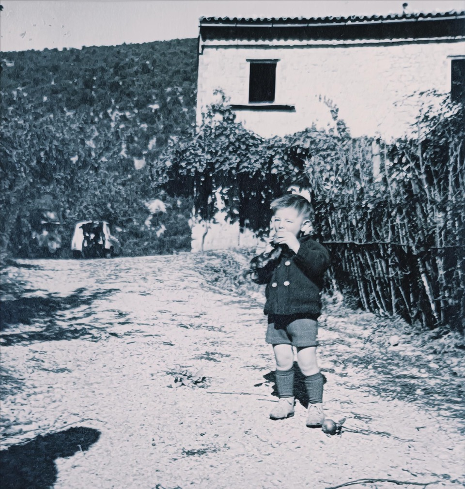

Ascenzio looked after San Pietro for more than half his life. On the occasion of his eighty-seventh birthday, an American friend painted his portrait. He wore the knitted cap he never took off and looked sturdy and good-natured, his complexion like a loaf of bread just out of the oven. Light from two windows fell across him as he posed in what had been his bedroom for thirty years, in the house at the foot of the mountain known as Cesagrande, which he and his family had left some twenty years earlier, shortly after electricity arrived.
When Frances, the painter, bought Cesagrande from my father, the house had been damaged and left uninhabitable by the 1997 earthquake. Only fragments of plaster still clung to the bedroom walls, faint traces of the original turquoise paint. Pigeons and sparrows nested among the beams, flying in and out through a hole in the roof, littering the chipped terracotta floor. And yet, from those windows, you could still watch the olives ripen, the oaks and cypresses change color with the seasons, and spot anyone arriving at the main gate of San Pietro.

Ascenzio died in 2010, well into his nineties. I did not attend his funeral—I was living in Paris at the time—but I like to think of his spirit among my household gods. A true Umbrian, made of the best water, he belonged to that rare breed of wise men who understand that a family is built from materials of unequal worth, and that this is precisely why it deserves every effort to keep it together. His own family—children, daughters-in-law, grandchildren, one of the last examples of a patriarchal existence I have known—always gathered closely around him and continued to follow his example after his death.
Everyone called him Ascenzio, though according to the registry his name was Sensidonio Armadori, the kind of name one could easily imagine marching off to fight the infidels during the Crusades. Ascenzio, however, was a gentle man. I still see him walking down the slope, a blue dot moving slowly, deliberately, tracing a zigzag path to soften the incline. He often had something for me, picked up during his rounds: sometimes a couple of truffles, sometimes a handful of field mushrooms.

In his later years, Ascenzio suffered from gout. Hardly surprising, given the family’s eating habits. Everyone—men and women alike—were tireless walkers and workers, sturdy and lean, but at the table they enjoyed the best of Umbrian cooking, rich in protein and animal fats: pasta with goose and truffles, roast guinea fowl, pigeons in liver sauce, stews of game, meat slowly roasted over embers. There was always a full glass of Sangiovese, and grappa at the end of the meal, distilled by Ascenzio himself from berries gathered in a stand of juniper on the barren ridge above San Pietro.
Every Monday, his daughter-in-law Silvana baked the bread for the week, along with tarts. Wood-fired bread is not my favorite—too compact, quick to dry—but for bruschetta, ribollita, and other soups there is nothing better. Her grilled lamb chops were the best I have ever eaten: pink and juicy meat, the skin crisp to perfection. At the Ferragosto breakfast, the roast lamb with potatoes, flavored with garlic, rosemary, and wild thyme, cooked by Ascenzio’s wife, was carried all the way up to San Pietro in large pans wrapped in kitchen towels. I have been trying for years to replicate her rotisserie chicken, so crisp and savory, tender inside and golden on the outside.
Life in Ascenzio’s household unfolded in the large kitchen of the family farmhouse, halfway between the village and the gate to San Pietro, with the fireplace always lit and a pot simmering on a tripod. I was invited for a dinner of snails, which they knew I loved. The table had been carefully set in advance, bowls and glasses turned upside down, waiting for the guests. It was usually the youngest members of the family who served.
The snails were cooked in a stew. I knew the preparation was laborious, starting with gathering them before sunrise, taking advantage of the night’s humidity and morning dew. They were left to purge for two days, then washed with water and vinegar, and boiled. In Ascenzio’s house they followed the recipe from Spoleto, where the family originated, preparing a broth with a little water, generous olive oil, and plenty of aromatic herbs: finely chopped garlic and fresh scallions, pennyroyal, marjoram, rosemary, and wild fennel, all deglazed with red wine and left to stew with crushed tomatoes.

Ascenzio sat at the head of the table. He had lived through all the hardships his advanced age suggested, but in the stories his family coaxed from him everything softened into comic paradox. He loved to recall his days as a soldier. He told a story the family had heard countless times and never tired of.
“At the start of the war, Ascenzio was an orderly in a military hospital in Bologna. The medical officer said, we need someone to do a little job. And I answered, all right, I’ll do it, but I’ll have to learn how. Don’t worry, Ascenzio, we’ll show you, the doctor said—and they did. The job was in the hospital morgue.”
Men died of all sorts of things: this one of one illness, that one of another, and another still of something else. When we bring you a dead man, you have to open him up, they told me. The first time, they made me saw open a fellow’s skull with a small carpenter’s saw. There were a dozen doctors standing there saying, go on, open his head. So I sawed at the back of the skull for a while, then along the sides. And when I got to the front—what happens? The dead man’s eyes suddenly flew wide open. I yelled, damn it. I was just a kid, and I nearly dropped dead myself. Who could do something like that?
The officer came over and asked, aren’t you done yet? Well, I said, I got scared when I saw the eyes open. All right, the doctor said, this will take care of it, and he handed me an electric drill. With that, I opened the head in no time, but then I had to grab the man by the hair and lift the top off like this. Ascenzio mimed the gesture, lifting his cap from his head. A brain is an incredible thing, he said, sipping his wine.